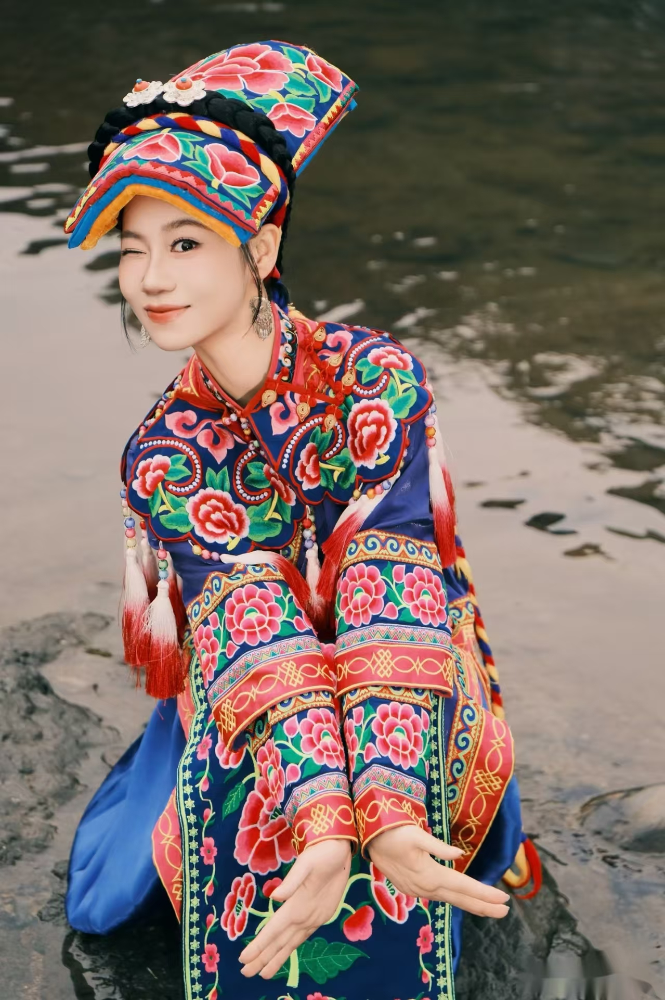

采集：在村寨里听见故事
记录纹样的名称、使用场景与老人们口述的记忆，先尊重来源，再开始设计。
QIANG EMBROIDERY · IMMERSIVE ARCHIVE
从一针一线，到当代新生
向下探索 · 约 3 分钟
QIANG EMBROIDERY PUZZLE
从九块绣片中，复原这幅盛开的纹样。
A LIVING THREAD
宁强羌族刺绣流传于陕西省汉中市宁强县羌族聚居区。它把日常生活、自然想象与代际记忆，一针一线绣入衣襟、头帕与器物。
宁强羌绣以不打样、不描线、随针而就见长。2016 年，它入选陕西省第五批省级非物质文化遗产名录。
READ THE PATTERN
点击落针，亲手看一朵羌绣花从线稿变成色彩。
WEAR THE STORY
拖动取景框，靠近服饰上的刺绣细节。

点按光点，探索服饰细节。
HAND · THREAD · TIME
穿针、起线、收线。手的温度和反复的练习，让一根线拥有了耐心。
FROM MEMORY TO MARKET
从村寨里的记忆出发，走进可被使用、可被看见的当代生活。
记录纹样的名称、使用场景与老人们口述的记忆，先尊重来源，再开始设计。
WHAT WE DO
项目不替代传承人发声，而是搭建连接技艺、青年、市场与乡村的协作路径。
走进村寨，收集真实需求与技艺故事。
让纹样、针法与文化解释保持准确。
以工作坊和互动传播降低接触门槛。
把图样转化为更贴近日常的使用场景。
以影像、档案和互动页面扩大被看见的机会。
CHALLENGE CUP · PROJECT LOGIC
BEYOND THE SCREEN
点亮沿途的三枚印记，打开羌绣与当代相遇的三个切面。
衣饰、鞋花、头帕与日常器物，都是羌绣被使用、被传承的现场。
NEW FORMS
向左滑动，查看羌绣元素走进当代生活的更多可能。
FROM PATTERN TO DAILY LIFE
当纹样进入挂件、饰品、礼物与体验活动，传统技艺便以新的方式参与今天的生活。
MAKE YOUR MARK
选择一份祝愿和一组色彩，让羌绣在你的手中再次生长。
SOURCES & NOTES
文化背景资料参考 陕西省非物质文化遗产保护中心：宁强羌族刺绣 与公开名录信息。页面图片与视频均使用本项目提供素材。